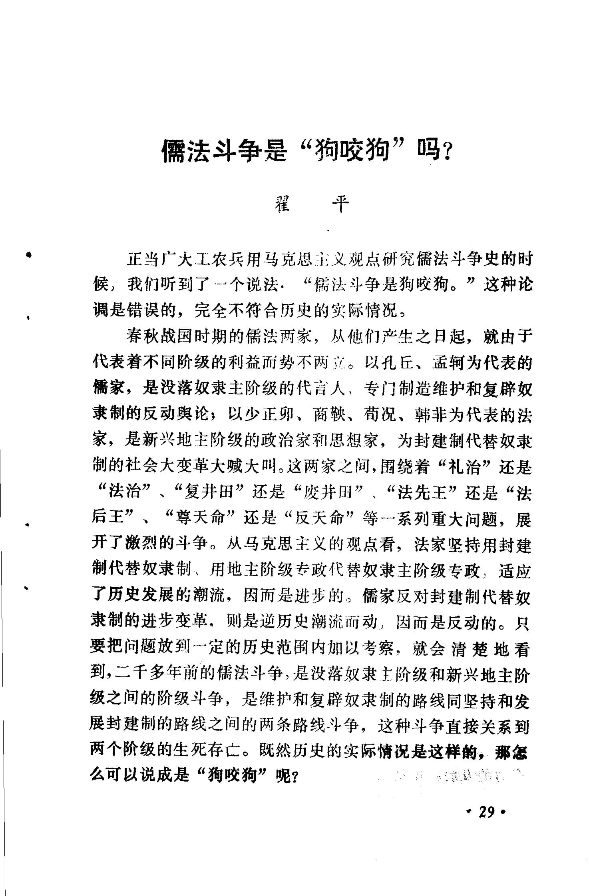
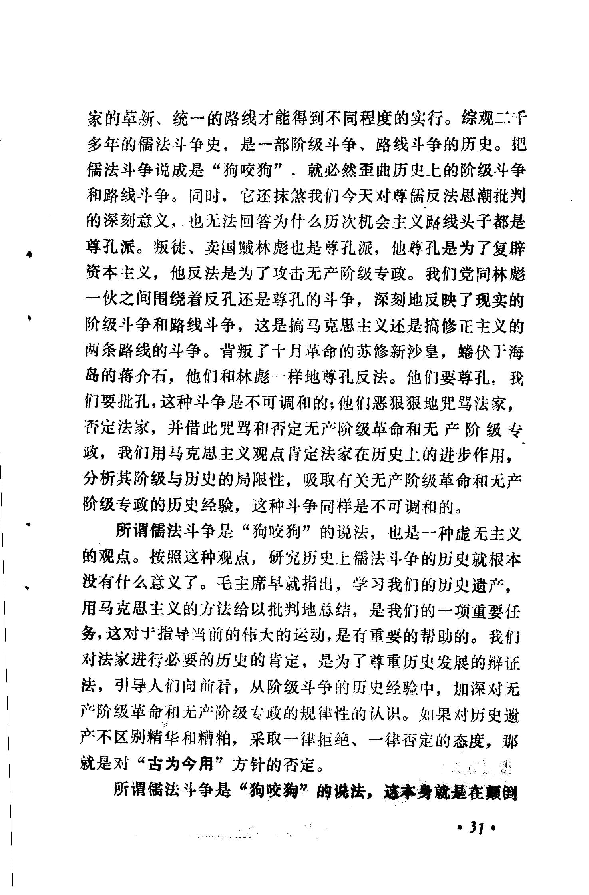
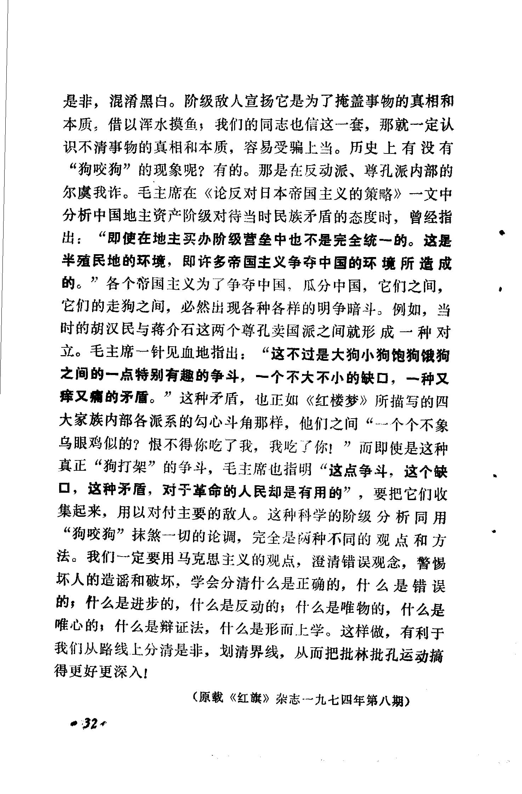

唯物主义和辩证法是正确的思想路线，如实地反映着客观事物及其规律；唯心主义和形而上学是错误的思想路线，歪曲地反映着客观现实。思想路线的斗争，在阶级社会里反映着敌对阶级之间的根本利害冲突，是阶级斗争的表现。 如春秋战国时期的儒法斗争，也是思想路线上的唯心主义和唯物主义的斗争，反映着没落奴隶主阶级和新兴地主阶级之间的斗争。代表进步阶级的正确思想路线是在同代表保守、反动阶级错误思想路线的激烈斗争中产生和发展起来的。阶级斗争的长期性、复杂性，决定了思想路线斗争的长期性、复杂性。{即使到了共产主义社舍，阶级消灭了，由于仍然存在着上层建筑同经济基础之间的矛盾，生产关系同生产力之间的矛盾，因而反映这些矛盾的先进和落后、正确和错误的两条思想路线的斗争依然会存在。
毛主席一再指出，我们这个民族有数千年的历史，有它的特点，有许多珍贵品，应该用马克思主义的方法给以批判地总结。从乌龟壳到共产党都应该给以总结。在批林批孔运动中，用马克思主义的立场、观点、方法，总结儒法斗争和整个阶级斗争的历史经验，就是批判地继承我国的历史遗产，用来为现实的阶级斗争服务，为反修防修服务，为巩固无产阶级专政服务。
——《哲学小辞典辩证唯物主义和历史唯物主义》
反革命修正主义者王星尊曲解和断章取义儒法斗争的意义，拿过去儒法斗争的两条路线斗争硬套帝国主义社会的部分现象，大肆散布历史唯心主义毒草谬论，以此论证中修当局统治阶级是儒家，是奴隶主，封建阶级，丝毫不顾经济基础和上层建筑的现实，妄图借此掩盖垄资的性质，为引出补课论提供理论基础，转移斗争的主要矛盾。
捣乱，失败，再捣乱，再失败。 王星尊的屡次向马列毛主义发起的进攻是徒劳的，革命的理论会击溃反革命分子的胡言乱语，王星尊这样的反革命修正主义分子终将被扫进不迟于人类的狗屎堆。
2 个赞